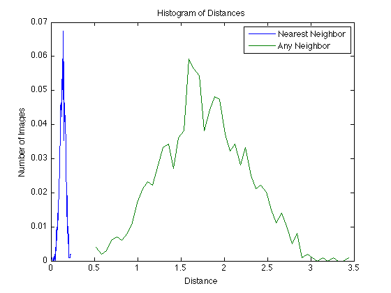
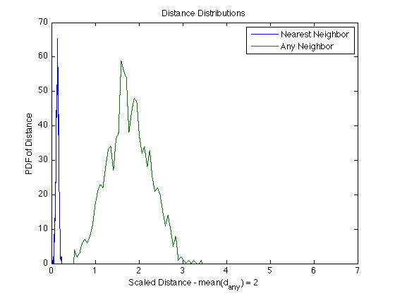
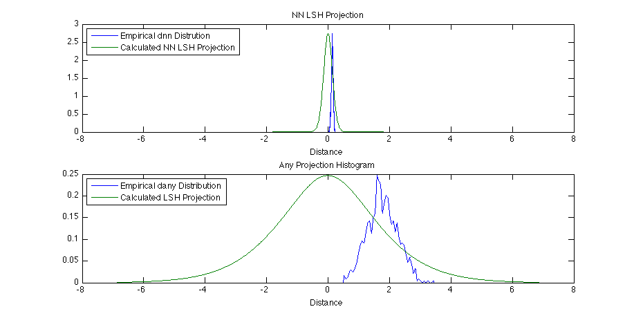
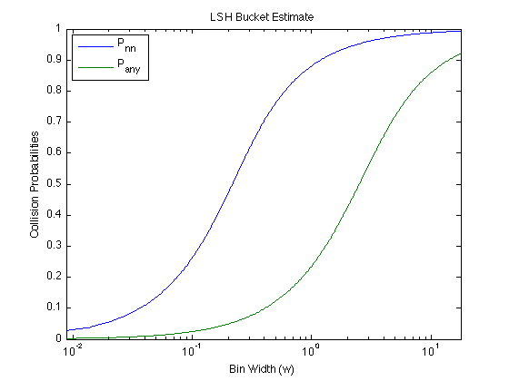
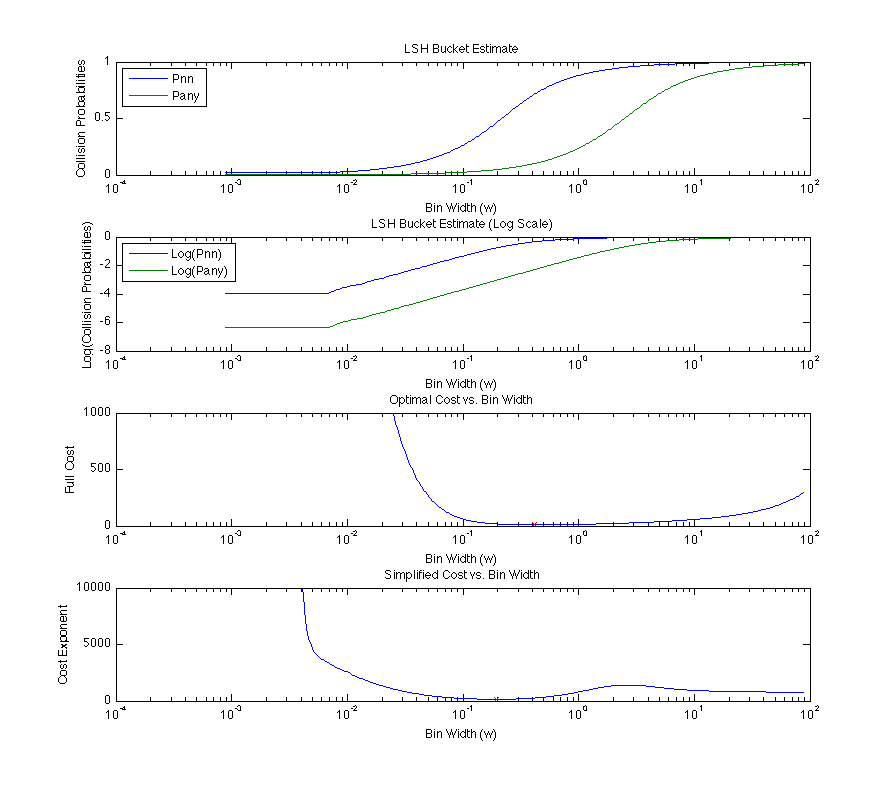
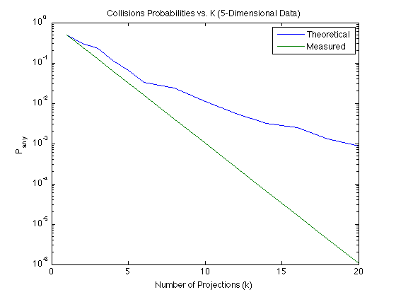
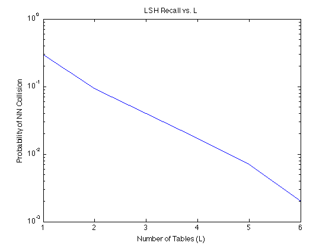

LSH Examples
This page documents some examples you can run using the Python LSH
code. Use these examples to learn how the code works, and to verify
that your installation is producing the same results.
Run this Python command to generate some data. This creates the testData005.data and testData005.nn
files, which contain the raw data and the nearest-neighbor data.
python2.6 lsh.py -d 5 -create
Now we can create the distance histograms.
python2.6 lsh.py -d 5 -histogram
This Matlab code reads in the newly created distance data.
load testData005.distances
Given this distance data,
we can calculate the optimal LSH statistics. Do this for
a small set of multiprobe distances (r=0:3)
D=5;
N=100000;
clear results
for r=0:2
results(r+1) = CalculateMPLSHParameters(D, N, ...
dnnHist, dnnBins, danyHist, danyBins, deltaTarget, r, uHash, uCheck);
end
fprintf('Multiprobe R');
fprintf('%10g ', [results(:).multiprobeR]); fprintf('\n');
fprintf('Exact W: ');
fprintf('%10g ', [results(:).exactW]); fprintf('\n');
fprintf('Exact k: ');
fprintf('%10g ', [results(:).exactK]); fprintf('\n');
fprintf('Exact L: ');
fprintf('%10g ', [results(:).exactL]); fprintf('\n');
fprintf('Exact Cost: ');
fprintf('%10g ', [results(:).exactCost]); fprintf('\n');
This produces a lot of output, but the summary statistics are shown below.
Multiprobe R 0 1 2
Exact W: 2.84285 1.26781 0.418881
Exact k: 22 13 8
Exact L: 3 6 14
Exact Cost: 2.96372 5.94376 11.9977
A number of debugging plots are create if you set the "debugPlot"
variable at the top of the CalculateMPLSHParameters() function.
These results are shown here.
First the raw distance data.

The distribution PDFs are scaled so that we can more easily invert
them and not run into sampling problems near the origin. Here is the scaled
distance plot.

Here are the projection probabilities, for the nearest-neighbors (top)
and the any-neighbors (bottom).

The collision probabilities (that the query point and a neighbor end up
in the same bucket after projection and quantization) varies with the bucket
size (w). Here is the estimated probabilities for p_nn and p_any as a
function of w. Both function start at 0 for very small bucket sizes
and asymptote to 1 as w gets larger.

Finally, here are the estimated costs as a function of bucket width (w).
Recall that given w we can compute the optimum k and l to satisfy the
performance guarantee (delta). The bottom two subplots show the
estimated costs. We are looking for the minimum and this point is
shown with a red 'x' for both the exact and simplified calculations.

Now we can run some of the statistical tests. First lets measure
recall as a function of bin width (w).
python2.6 lsh.py -w 2.842 -k 22 -l 3 -r 0 -d 5 -wtest
wTest=[0.002775390625 0.00613682092555 0.000570710261569 0.00247037726358
0.00555078125 0.019416498994 0.00137549698189 0.00317796780684
0.0111015625 0.0260563380282 0.00214813581489 0.00412014688129
0.022203125 0.0736418511066 0.00583786317907 0.0128519587525
0.04440625 0.145271629779 0.011720001006 0.0286925241449
0.0888125 0.26106639839 0.0222321126761 0.0569520623742
0.177625 0.445875251509 0.0401588772636 0.106404433602
0.35525 0.707746478873 0.0857970985915 0.199528055332
0.7105 0.821126760563 0.139215655936 0.280194254527
1.421 0.920020120724 0.307526094567 0.468706808853
2.842 0.963480885312 0.570697099598 0.577900581489
5.684 0.978873239437 0.680433202213 0.630925920523
11.368 0.992555331992 0.913744315895 0.688166312877
22.736 0.995271629779 0.950135774648 0.69906443159
45.472 0.999698189135 0.999906 0.676777392354
90.944 1.0 0.99999 0.674852025151
];
semilogx(results(1).wList/results(1).dScale, results(1).binNnProb, ...
results(1).wList/results(1).dScale, results(1).binAnyProb, ...
wTest(:,1), wTest(:,2), 'rx', ...
wTest(:,1), wTest(:,3), 'kx')
legend('p_{nn} Theoretical', 'p_{any} Theoretical', ...
'p_{nn} Measured', 'p_{any} Measured', ...
'Location', 'NorthWest');
xlabel('Bucket Width (w)');
ylabel('Probability');
title('Bucket Probabilities for a Single Projection');

Now let's look at performance as a function of the number of projections (k).
python2.6 lsh.py -w 2.842 -k 22 -l 3 -r 0 -d 5 -ktest
This produces a table of numbers which we can cut and paste into Matlab.
% print w, k, l, pnn, pany, pany*numPoints, queryTime
kTest = [2.842 1 10 0.95814889336 0.503193458753 50319.3458753 0.429140244467
2.842 2 10 0.930080482897 0.302243902414 30224.3902414 0.360289647887
2.842 3 10 0.901509054326 0.227778855131 22777.8855131 0.323352856137
2.842 4 10 0.872736418511 0.113660165996 11366.0165996 0.203283773642
2.842 5 10 0.817505030181 0.0659766488934 6597.66488934 0.133537422535
2.842 6 10 0.776056338028 0.0325818239437 3258.18239437 0.0694155754527
2.842 8 10 0.744567404427 0.0241331006036 2413.31006036 0.0522499798793
2.842 10 10 0.682696177062 0.0111529668008 1115.29668008 0.025915
2.842 12 10 0.639336016097 0.0055821277666 558.21277666 0.0149429698189
2.842 14 10 0.589939637827 0.00320457344064 320.457344064 0.0107608762576
2.842 16 10 0.539637826962 0.0024737555332 247.37555332 0.0103832203219
2.842 18 10 0.500301810865 0.00131949698189 131.949698189 0.00888074044265
2.842 20 10 0.468108651911 0.000882884305835 88.2884305835 0.00884664688131
];
semilogy(kTest(:,2), kTest(:,5), kTest(:,2), kTest(1,5).^kTest(:,2));
xlabel('Number of Projections (k)');
ylabel('P_{any}')
title('Collisions Probabilities vs. K (5-Dimensional Data)');
legend('Theoretical', 'Measured')
Note, that the number of collisions (for p_{any}) declines
as predicted up to k=5. Then we start getting more collisions than
we expect. This is because the data dimensionality is less than k, so
the extra projections are no longer independent.

lTest = [
% w k l pnnFull, panyFull panyFull*N queryTime
2.842 10 1 0.701207243461 0.00677737424547 677.737424547 0.000948152917505
2.842 10 2 0.907444668008 0.0233886418511 2338.86418511 0.00362873239437
2.842 10 3 0.959758551308 0.0188673541247 1886.73541247 0.00360271327968
2.842 10 4 0.982897384306 0.035483943662 3548.3943662 0.0071217665996
2.842 10 5 0.992957746479 0.0444439537223 4444.39537223 0.00967045070422
2.842 10 6 0.997987927565 0.0531273138833 5312.73138833 0.0126281961771
2.842 10 10 1.0 0.0680776458753 6807.76458753 0.0201157414487
];
semilogy(lTest(:,3), 1-lTest(:,4));
xlabel('Number of Tables (L)');
ylabel('Probability of NN Collision');
title('LSH Recall vs. L');
